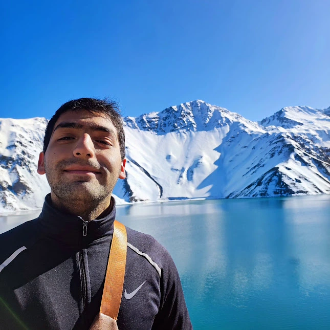

I'm Pablo Chumba from Rancagua. I'm 22 years old. I'm someone who cares about people, thinks a little too much, and tries to do the right thing (most days). I like learning new stuff, good conversations, and laughing at myself when life gets weird. Big on values, hopefully not so big on drama, taking things one step at a time. Not perfect, still figuring things out, but showing up and moving forward anyway. That’s the plan.
Pablo Chumba | WDD 130
